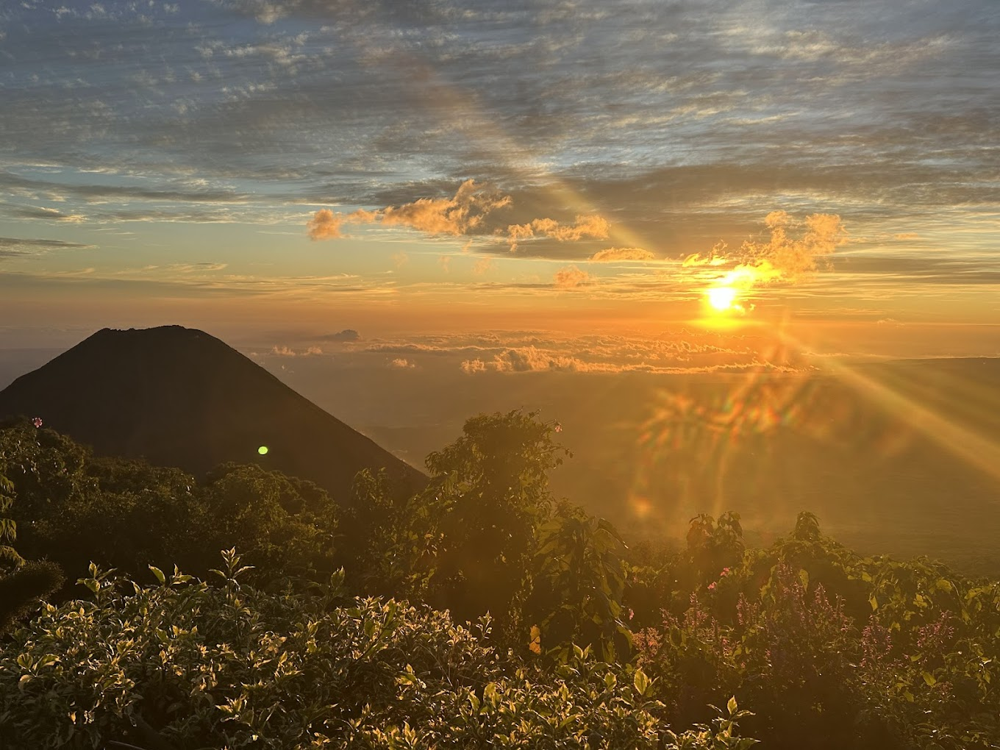

Complejo " Cerro los volcanes "
Vive la aventura de escalar los 2 volcanes mas activos y fuertes de El Salvador , ubicados en Santa Ana , esta aventura comienza
desde el cerro verde , para escalarlo y hacer una pausa en la caja de cristal.
Luego , bajaremos por un sendero para poder empezar s a escalar las imponentes falds del volcan de Santa Ana , cuyo volcan
es el mas alto del pais y uno de los mas activos.
Costo : $$25 por persona.
